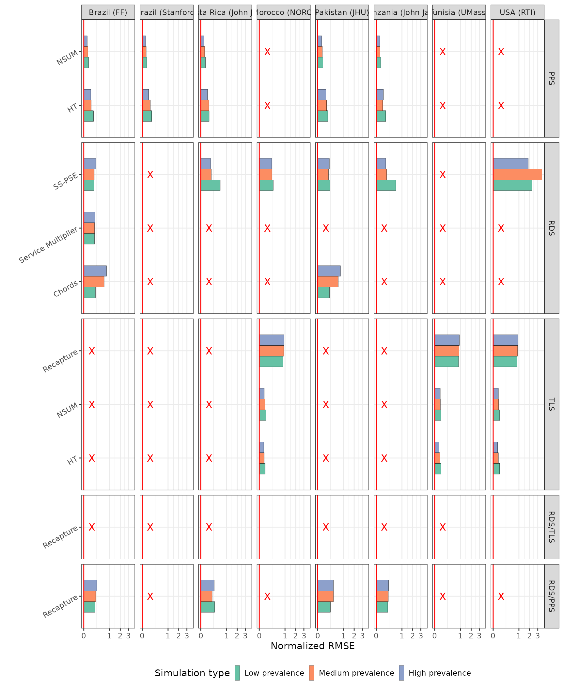
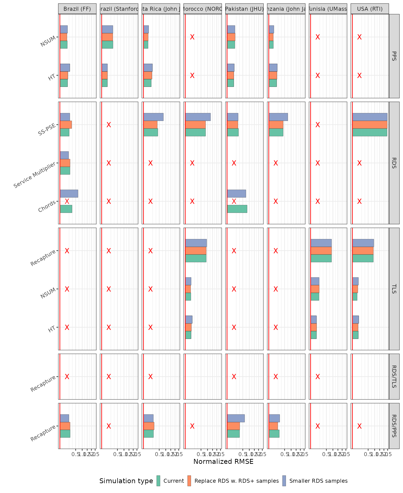

Diagnosing study robustness with hiddenmeta
Source:vignettes/diagnose-studies.Rmd
diagnose-studies.RmdLoad packages
library(hiddenmeta)
library(DeclareDesign)
library(knitr)
seed <- 871223
study_diagnosands <-
declare_diagnosands(
mean_estimand = mean(estimand),
mean_estimate = mean(estimate),
sd_estimate = sd(estimate),
mean_se = mean(se),
bias = mean(estimate - estimand),
rmse = sqrt(mean((estimate - estimand) ^ 2))
)Read study designs
googlesheets4::gs4_auth(email = "gerasy@gmail.com")
# priors
param_names <-
googlesheets4::gs4_get(ss = "1fSHX5-RWFJFdghG7GIapYjEqzIz0M-XVk-sd8hkK9uo")$sheets$name
multi_designs_list_params <- list()
for (i in seq_along(param_names)) {
multi_designs_list_params[[param_names[i]]] <-
read_study_params(
ss = "1fSHX5-RWFJFdghG7GIapYjEqzIz0M-XVk-sd8hkK9uo",
sheet = param_names[i]
)
}
saveRDS(multi_designs_list_params,
file = here::here("inst/extdata/study_designs_list_priors.rds"))
saveRDS(param_names, file = here::here("inst/extdata/sim_param_names.rds"))
# design features
design_feature_names <-
googlesheets4::gs4_get(ss = "1upxdRUlJ-6pDDog-j8kUxn8WD_y7-nY4ZQCQblKr3hc")$sheets$name
multi_designs_list_features <- list()
for (i in seq_along(design_feature_names)) {
multi_designs_list_features[[design_feature_names[i]]] <-
read_study_params(
ss = "1upxdRUlJ-6pDDog-j8kUxn8WD_y7-nY4ZQCQblKr3hc",
sheet = design_feature_names[i]
)
}
saveRDS(multi_designs_list_features,
file = here::here("inst/extdata/study_designs_list_features.rds"))
saveRDS(design_feature_names, file = here::here("inst/extdata/sim_design_feature_names.rds"))
param_names <-
readRDS(system.file("extdata", "sim_param_names.rds", package = "hiddenmeta"))
multi_designs_list_params <-
readRDS(system.file("extdata", "study_designs_list_priors.rds", package = "hiddenmeta"))
design_feature_names <-
readRDS(system.file("extdata", "sim_design_feature_names.rds", package = "hiddenmeta"))
multi_designs_list_features <-
readRDS(system.file("extdata", "study_designs_list_features.rds", package = "hiddenmeta"))Simulate studies varying priors on core parameters
requireNamespace(c("doParallel", "parallel"))
doParallel::registerDoParallel(cores = 50)
for (i in seq_along(param_names)) {
cat("Doing simulation", param_names[i])
study_designs <- multi_designs_list_params[[param_names[i]]]
multi_population <-
declare_population(handler = get_multi_populations,
pops_args = sapply(study_designs,
function(x) x$pop,
simplify = FALSE))
multi_sampling <-
declare_sampling(handler = get_multi_samples,
samples_args = sapply(study_designs,
function(x) x$samples,
simplify = FALSE))
multi_inquiry <-
declare_inquiry(handler = get_multi_estimands,
inquiries_args = sapply(study_designs,
function(x) x$inquiries,
simplify = FALSE))
multi_estimators <-
declare_estimator(handler = get_multi_estimates,
estimators_args = sapply(study_designs,
function(x) x$estimators,
simplify = FALSE))
multi_study <- multi_population + multi_sampling + multi_inquiry + multi_estimators
set.seed(seed)
multi_simulations <-
plyr::llply(
as.list(1:100),
.fun = function(x) {
try(
DeclareDesign::simulate_design(multi_study, sims = 1) %>%
dplyr::mutate(
sim_ID = x
)
)
},
.parallel = TRUE
) %>%
{ .[sapply(., function(x) class(x) != "try-error")] } %>%
dplyr::bind_rows()
saveRDS(multi_simulations, file = here::here(paste0("inst/extdata/multi_sim_real_",
param_names[i], ".rds")))
}Simulate studies varying design features
requireNamespace(c("doParallel", "parallel"))
doParallel::registerDoParallel(cores = 50)
for (i in seq_along(design_feature_names)) {
cat("Doing simulation", design_feature_names[i])
study_designs <- multi_designs_list_features[[design_feature_names[i]]]
multi_population <-
declare_population(handler = get_multi_populations,
pops_args = sapply(study_designs,
function(x) x$pop,
simplify = FALSE))
multi_sampling <-
declare_sampling(handler = get_multi_samples,
samples_args = sapply(study_designs,
function(x) x$samples,
simplify = FALSE))
multi_inquiry <-
declare_inquiry(handler = get_multi_estimands,
inquiries_args = sapply(study_designs,
function(x) x$inquiries,
simplify = FALSE))
multi_estimators <-
declare_estimator(handler = get_multi_estimates,
estimators_args = sapply(study_designs,
function(x) x$estimators,
simplify = FALSE))
multi_study <- multi_population + multi_sampling + multi_inquiry + multi_estimators
set.seed(seed)
multi_simulations <-
plyr::llply(
as.list(1:100),
.fun = function(x) {
try(
DeclareDesign::simulate_design(multi_study, sims = 1) %>%
dplyr::mutate(
sim_ID = x
)
)
},
.parallel = TRUE
) %>%
{ .[sapply(., function(x) class(x) != "try-error")] } %>%
dplyr::bind_rows()
saveRDS(multi_simulations, file = here::here(paste0("inst/extdata/multi_sim_real_",
design_feature_names[i], ".rds")))
}Diagnose the studies with initial parameters
requireNamespace(c("doParallel", "parallel"))
doParallel::registerDoParallel(cores = 20)
set.seed(seed)
multi_simulations <-
plyr::llply(
as.list(1:100),
.fun = function(x) {
try(
DeclareDesign::simulate_design(multi_study, sims = 1) %>%
dplyr::mutate(
sim_ID = x
)
)
},
.parallel = TRUE
) %>%
{ .[sapply(., function(x) class(x) != "try-error")] } %>%
dplyr::bind_rows()
saveRDS(multi_simulations, file = here::here("inst/extdata/multi_sim_real_original.rds"))Diagnose base study design
study_designs_base <-
readRDS(system.file("extdata", "multi_sim_real_original.rds", package = "hiddenmeta"))
(
plots_rmse_base <-
study_designs_base %>%
diagnose_design(simulations_df = .,
diagnosands = study_diagnosands) %>%
.$diagnosands_df %>%
get_rmse_plots(diagnosands_df = .)
)
Compare performance across priors
study_designs_over_priors <-
c("multi_sim_real_best.rds",
"multi_sim_real_prevalence_1.rds",
"multi_sim_real_prevalence_2.rds",
"multi_sim_real_showup_1.rds",
"multi_sim_real_showup_2.rds",
"multi_sim_real_visibility_1.rds",
"multi_sim_real_visibility_2.rds",
"multi_sim_real_connectedness_1.rds") %>%
lapply(function(x) {
diagnose_design(simulations_df = readRDS(system.file("extdata", x, package = "hiddenmeta")),
diagnosands = study_diagnosands) %>%
.$diagnosands_df %>%
dplyr::mutate(
sim_type = gsub("multi\\_sim\\_real\\_|\\.rds", "", x = x),
sim_type =
plyr::mapvalues(sim_type,
from = c("best",
"prevalence_1",
"prevalence_2",
"showup_1",
"showup_2",
"visibility_1",
"visibility_2",
"connectedness_1"),
to = c("Optimistic",
"Medium prevalence",
"High prevalence",
"Medium TLS showup",
"Low TLS showup",
"Medium visibility",
"Low visibility",
"Network imbalance"),
warn_missing = FALSE),
sim_type =
factor(sim_type, levels = c("Optimistic",
"Medium prevalence",
"High prevalence",
"Medium TLS showup",
"Low TLS showup",
"Medium visibility",
"Low visibility",
"Network imbalance"),
ordered = TRUE)
)
}) %>%
bind_rows()
( plots_rmse_over_priors <- get_rmse_plots(diagnosands_df = study_designs_over_priors) )
Compare perfromance across design features
study_designs_over_designs <-
c("multi_sim_real_original.rds",
"multi_sim_real_rdsplus_only.rds",
"multi_sim_real_shift_sample_1.rds") %>%
lapply(function(x) {
diagnose_design(simulations_df = readRDS(system.file("extdata", x, package = "hiddenmeta")),
diagnosands = study_diagnosands) %>%
.$diagnosands_df %>%
dplyr::mutate(
sim_type = gsub("multi\\_sim\\_real\\_|\\.rds", "", x = x),
sim_type =
plyr::mapvalues(sim_type,
from = c("original",
"rdsplus_only",
"shift_sample_1"),
to = c("Current",
"Replace RDS w. RDS+ samples",
"Smaller RDS samples"),
warn_missing = FALSE),
sim_type =
factor(sim_type, levels = c("Current",
"Replace RDS w. RDS+ samples",
"Smaller RDS samples"),
ordered = TRUE)
)
}) %>%
bind_rows()
( plots_rmse_over_designs <- get_rmse_plots(diagnosands_df = study_designs_over_designs) )